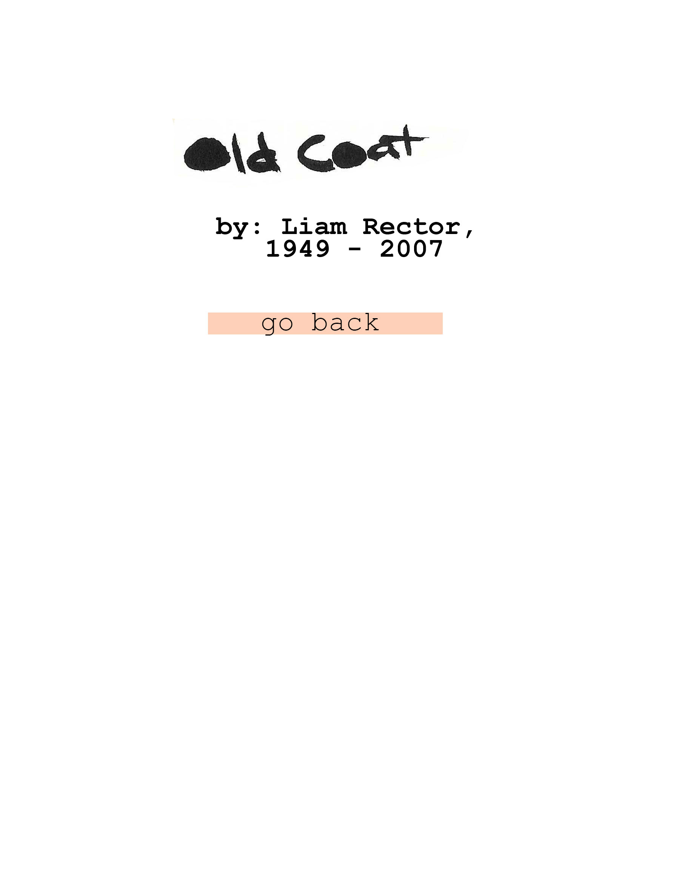
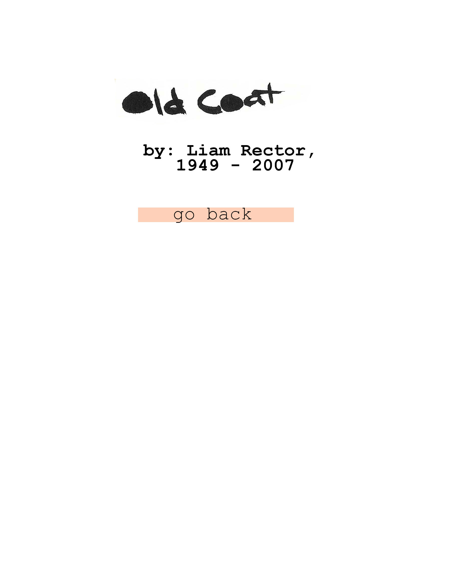

Dressed in an old coat I lumber Down a street in the East Village, time itself
Whistling up my ass and looking to punish me For all the undone business I have walked away from,
And I think I might have stayed In that last tower by the ocean,
The one I built with my hands and furnished Using funds which came to me at nightfall, in a windfall....
Just ahead of me, under the telephone wires On this long lane of troubles, I notice a gathering
Of viciously insane criminals I’ll have to pass Getting to the end of this long block in eternity.
There’s nothing between us. Good I look so dangerous in this coat.